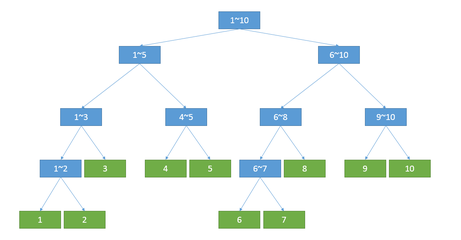

*注：在读本文前请对树结构有一个基本概念，建议从二叉树入手。
线段树的作用
如果求一段区间和，暴力需要o(n)，修改o(1)。为了快速查找一段区间和，所以引出线段树。查找复杂度o(logn)，修改o(logn)。
线段树的概念

一个数组的所有数都在叶子结点，然后往上建树。如图所示，蓝色的标记为i~j段的和。每一个结点的权重就是它孩子的和。所以线段树是一种特殊的二叉树。
线段树的建立
用数组存储二叉树
用数组模拟，为了方便起见，下标从1开始。
根据二叉树的性质，第k个结点的左儿子和右儿子的权重为 2*k, 2*k+1。
那从此树由上到下标记
1
2 3
4 5 6 7
…
用一个数组就可以把它存下来，a[i]下标i对应上面的标记，a[i]存它的权重，而这个权重，就是左儿子和右儿子的权重和。
比如长度为10的数组
1 2 3 4 5 6 7 8 9 10
建立树以后：
1 |
|
小工具
注：为了方便以下均默认
1 | typedef long long ll; |
1. 获取一个二叉树的子结点下标
1 | ll ls(ll x) //左孩子下标 |
注：二进制位左移一位代表着数值*2，而如果左移完之后再或上11，由于左移完之后最后一位二进制位上一定会是00，所以∣1等价于+1+1。
2. 计算当前结点p的权值
1 | a[p] = a[ls[p]] + a[rs[p]]; |
线段树的递归创建
1 | void build(ll l, ll r, ll p) { |
递归创建即可。在此处用到了分治的思想，每次从中点开始分。
比如 1 2 3 4 5
分成 s1: [1 2]和 s2: [3 4 5]
再对 s1, s2分别分，
s1:
[1] 和 [2]
s2:
[3] 和 [4 5]
[1]、[2]、[3]都不可分了，就是达到l == r的条件，stree[p] 就是原数组的值。
但是[4 5]还可以继续分，那就继续分呗。
1 | build(l, mid, ls(p)); |
p其实就是一个指针，指的是当前循环/递归操作的结点，所以主函数调用的时候自然从p = 1开始。
递归完之后，就是回溯。因为后面还有一个push_up§，回溯的时候，对应的l == r的状态都被标记了，这个时候，stree[]数组里面就是有值的。
还记得前面说的标记吗
1 | 那从此树由上到下标记 |
stree[标记]就是下标为i的结点的权重。
l == r是什么状态？ 就是
绿颜色的状态。因为l已经等于r了，它是不可分的。
我们称其为叶子结点。
回溯的过程，就是求和的过程。
建树的完整代码
建树以及测试的完整代码如下：
1 |
|
线段树的维护
1. 线段树的修改
1 | void update(ll p, ll l, ll r, ll x, ll val) { |
注意：因为if else的条件限制，x只可能介于l和r之间。当l == r时，p所指向的stree就是叶节点，等于a[l]。
2. 线段树的查找
1 | ll query(ll p, ll lx, ll rx, ll l, ll r) { |
参数分别为：
p线段树的指针（学术上不能这么叫知道意思就行了）
[lx, rx] 查找求和区间
[l, r] 当前分治后的线段树区间。开始是[1,n]，第一次分治后是[1,mid],(mid, n]
结束条件：
- [lx,rx]和[l,r]的区间没有交集，如[1,2] [3,4]，或者[3,4] [1,2]，说明此层递归的[l,r]不包括我们想要求和的数，那返回0；
- l == r的时候说明到了叶子结点，返回叶子结点的值a[l]或a[r]，或者我们想要求的区间[lx,rx]包括了[l,r]，这个时候就得把整个[l,r]的区间和加上去。就是return stree[p]。但由于前面已经提到过，a[l] == a[r] == stree[p]，所以直接return stree[p]即可。
特别注意：1、2的结束条件不能互换，因为l == r的时候，可能存在两个区间没有交集的情况。
线段树建树及维护的完整测试代码
1 |
|
例题相关
WUST_2456: 区间和
Time Limit: 2 Sec Memory Limit: 128 MB 64bit IO Format: %lld
Description
给定长度为n的全0序列，接下来有m次操作，操作共有两种：
（1）修改某个元素；
（2）求某个区间的区间和。
Input
多组测试数据，每组测试数据的格式描述如下：
第一行：包含两个正整数n，m（n<=100000，m<=500000）；
接下来是m行：每行有三个正整数k，a，b（k=0或1，a,b<=n）
（1）k=0时表示将a处数字加上b；
（2）k=1时表示询问区间[a，b]内所有数的和。
Output
每组测试数据，对于每个询问输出对应的答案，占一行。
Sample Input
10 20
0 1 10
1 1 4
0 6 6
1 4 10
1 8 9
1 4 9
0 10 2
1 1 8
0 2 10
1 3 9
0 7 8
0 3 10
0 1 1
1 3 8
1 6 9
0 5 5
1 1 8
0 4 2
1 2 8
0 1 1
Sample Output
10
6
0
6
16
6
24
14
50
41
源代码
1 |
|
WUST_2457: A Simple Problem with Integers
Time Limit: 1 Sec Memory Limit: 128 MB 64bit IO Format: %lld
Description
给定数列 a[1],a[2],…,a[n]，你需要依次进行 q 个操作，操作有两类：
（1）C l r x：给定l,r,x，将 a[l],a[l+1],…,a[r] 分别加上 x；
（1）Q l r：给定l,r，求 a[l]+a[l+1]+⋯+a[r] 的值。
Input
多组测试数据，每组测试数据的格式描述如下：
第一行包含 2 个正整数 n,q，表示数列长度和询问个数。保证 1≤n,q≤106 。
第二行 n 个整数，a[1],a[2],…,a[n]，表示初始数列。保证 ∣a[i]∣≤106 。
接下来 q 行，每行一个操作，为以下两种之一：
（1）C L R x：对于所有 i（L<=i<=R），将 a[i] 加上 x；
（2）Q L R：输出 a[L]+…+a[R] 的值。保证 1≤L≤R≤n,∣x∣≤106 。
Output
每组测试数据，对于每个 Q L R操作，输出一行，每行有一个整数，表示所求的结果。
Sample Input
5 10
2 6 6 1 1
Q 1 4
C 2 5 10
Q 1 3
Q 2 3
C 2 2 8
C 2 3 7
C 4 4 10
Q 1 2
C 4 5 6
Q 3 4
Sample Output
15
34
32
33
50
源代码
1 |
|